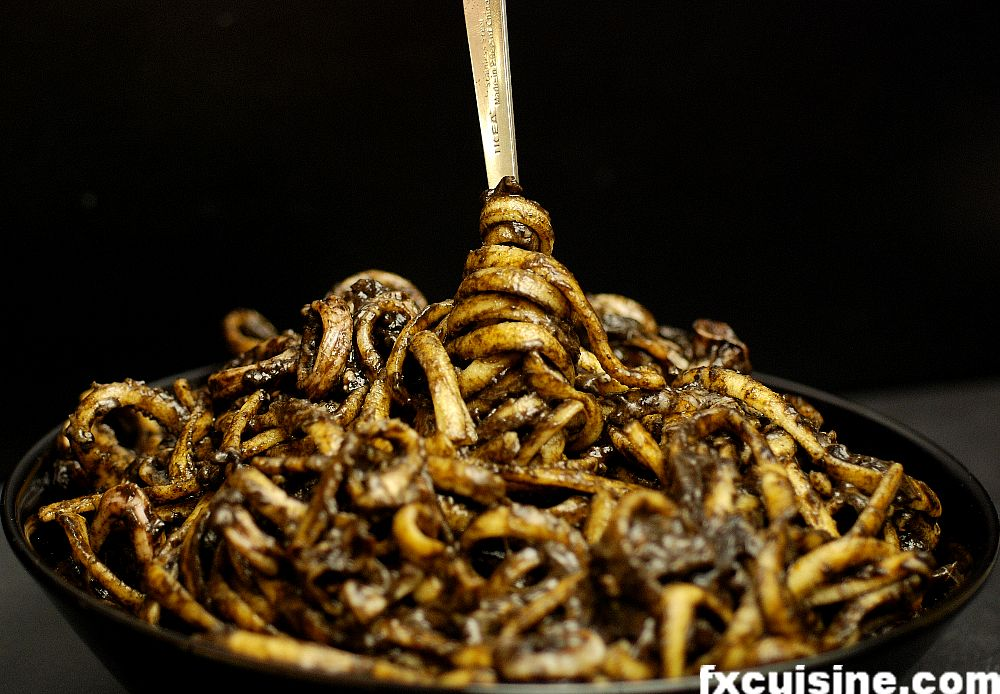

Pasta in Cuttlefish Ink Sauce
Ingredients:
- 4 squids
- 2 bags of cuttlefish ink (Nero di Sepia)
- 4 ripe tomatoes or 1 can chopped tomatoes
- 1 medium onion
- 2 garlic cloves
- 1lb long pasta (eg. spaghetti, linguine, bucatini)
- 120gr grated pecorino cheese
- A bunch of parsley
- Piment d'Espelette (red pepper flakes)

Directions:
- Squids are members of the baggy animal kingdom. Their whole body is organised in bags, which the cook needs to extract one by one by putting his fingers into the beast and remove them.
- Then you have to find the transparent 'bone' that keeps the bag straight and remove it too.
- Finally, peel off the skin.You can then cut 0.5''/1cm rings and set them aside.
- Peel the onion, then cut it in half, then thinly lengthwise, then one time lengthwise but horizontally and finally thinly crosswise. You'll end up with tiny onion cubes and be content to have cut an onion like a French chef.
- Proceed in the same fashion with the garlic.
- In a wide saucepan, start by frying the onion and garlic in 2 tbsp olive oil.
- Add the pureed tomatoes and bring to a boil.
- Let the squid rings join them and cook over a medium-high flame until they are cooked through.
- Add the chopped parsley, red pepper flakes, and the ink, and mix well.This miraculous substance starts spreading in the bright red sauce and turns everything the darkest shade of black. Cuttlefish ink is a powerful colorant, and it adds a brilliant, intense iodine taste.
- Fill your largest pot with water, add some salt and bring to rolling boil on your hottest burner before adding the pasta.
- Remove the pasta just about 30 seconds before it's fully cooked, as it will continue to cook in the sauce.
- The Italians consider it sacrilege eating Parmesan on any dish that contains fish, and most Italians extend this notion to any cheese. But this traditional Sicilian recipe calls for grated pecorino, and this is in fact culinary orthodoxy. This is not of these I-add-a-little-ginger-as-a-personal-touch kind of recipes and if you discuss this dish with Italians somebody might certainly end up with his feelings bruised - now it won't be you. Grate and add the cheese.
- Mix intimately and serve as a gorgeous first course in a formal dinner or as main course.